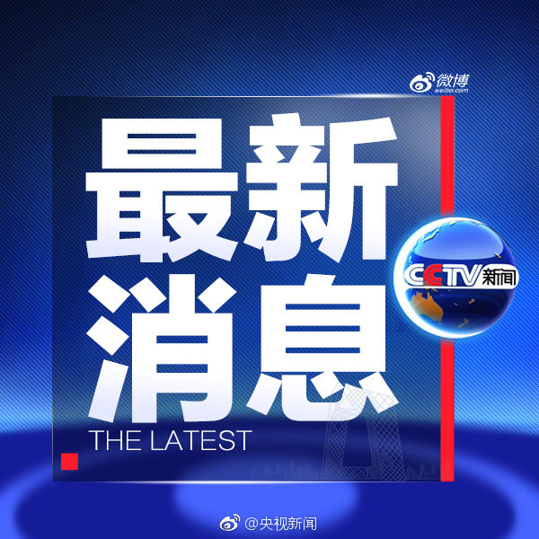
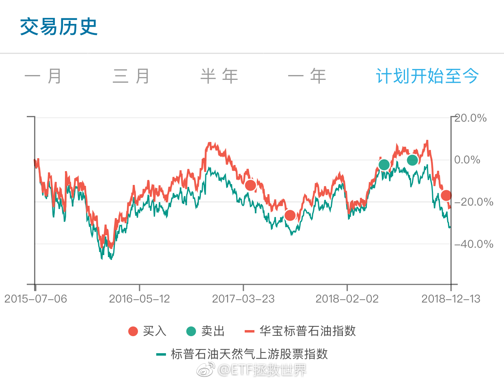
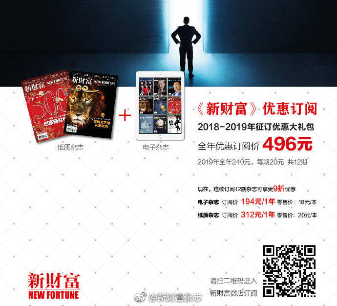

不过就像这次有一道题是算收益率。很多朋友发回来的邮件上都写，自己算了才知道有多麻烦，需要多么认真，要耗费多少精力。是啊，很多朋友认为是被喷是小事不应该理会。其实你自己经历才知道是什么感觉……越来越爱看马克吐温的东西了！
雪球确实不能去。去了情绪受影响。喷子极多。走了也没完。而且我跟你说，还真有那么一批人关注你。每篇东西他都看，然后喷你。对于这些喷子到底是什么人，为什么喷，我一直相当疑惑：难道就没点正事干吗。上次微博的一件事让我有了点认识。记不记得上次有人在微博评论骂我家人。我急了，准备干他。他所有信息五分钟之内全部查清。姓名，地址，职业，等等。哥们马上给我私信，各种认错，之前的嚣张气焰一点都没了。我这个人愿意与人为善。既然人家认错了，就算了吧。但这件事让我知道了，喷子们躲在屏幕后面，活在键盘上，其实大部分都是现实社会中非常弱的一群人。也许只有在网上喷，才能让他有可以发泄的机会。毕竟，他们的人生太苦了。
第一，该买的家电买起来。洗碗机扫地机器人什么的减少摩擦的机会。第二，小时工该请就请。第三，谁有时间谁就做，都有时间就一起做。第四，不管是谁放着一堆家务不干孩子不陪，去玩游戏或者刷剧都该骂。---:抱歉，作者已设置仅展示半年内微博，此微博已不可见。
有了新的情况，你坚持大方向，有人说，逻辑变了，你这样坚持既定方针不会好。有了新的情况，你技术性的微调，给出更大的安全空间，有人说，你当初怎么说的为什么不做。你永远也没法让所有人满意。即使你闭嘴一个字不说也不行。
回复@啊Allen个兄弟:吃饱了撑的吧。我买不买满，他到别的网站别人帖子底下回帖嘲讽？辣鸡。我不买满，能让几万人不死。他除了嘴炮还有什么功能。//@啊Allen个兄弟:回复@ETF拯救世界:图片评论 评论配图 //@ETF拯救世界:@央视新闻:【北京明年取消特长生招生】据北京市教委，今年北京市100%的公办小学和初中划片就近入学，小学和初中就近入学比例分别保持在99%和96%以上。同时，今年北京市各区招收特长生比例为本区初中招生计划的4%以内，明年将取消特长生招生。城六区逐步降低公办学校寄宿招生数量和比例，到2020年寄宿招生将实行登记派位入学。（央视记者柴丹枫）
@央视新闻:【北京明年取消特长生招生】据北京市教委，今年北京市100%的公办小学和初中划片就近入学，小学和初中就近入学比例分别保持在99%和96%以上。同时，今年北京市各区招收特长生比例为本区初中招生计划的4%以内，明年将取消特长生招生。城六区逐步降低公办学校寄宿招生数量和比例，到2020年寄宿招生将实行登记派位入学。（央视记者柴丹枫）
回复@小明修炼中:这有什么不懂的。你能找到5只牛股就去买5只牛股。找错了的代价就是收益率远低于指数。很多人永远无法理解的是，并非甲能做好的事乙就能做好。所以鼓吹重仓2、3只甚至全仓一只的人，是对他人极度不负责。@ETF拯救世界:评论里没完没了问医药的那些人我跟你说几点，你能理解就理解，不能理解赶紧取关走人。第一，医药是我最看好的行业。第二，目前计划内医药仓位9个多点（医药6%+养老3%），目标仓位最大给15%-20%。不跌我们永远没机会配满。第三，目前医药估值过去十三年新低。第四，目前医药跌至十三年大趋势下沿附近。第五，今年医药下跌24%，最高点下来跌幅36%，我们持仓浮亏12%。后来跟车的朋友浮亏幅度更低。我不知道你自己炒股不炒股，你去翻翻你股票账户，仓位9%，浮亏12%，去年开始买的股票是不是已经基本表现最好的了。第六，我的态度会在计划操作中体现。自己回头去看今年医药的操作。第七，医药是我最看好的行业。
回复@胡鹏171:从那时候开始现在已经是第八轮了。一个品种历史最低位附近，却还能赚很多，说明一个好的策略是投资中最重要的。//@胡鹏171:E大，猜你又开了油气网格了吧？看你12年到13年的操作记录，真是太精彩了。@ETF拯救世界:赚了钱不卖就是过山车。乱卖又赚不到大钱。事后看明明白白，当时看一片迷茫。 
回复@cosmicmagic:有人觉得波动大是风险。我倒认为波动大是非常好的机会——除非你做反了。//@cosmicmagic:油气波动真大@ETF拯救世界:赚了钱不卖就是过山车。乱卖又赚不到大钱。事后看明明白白，当时看一片迷茫。
回复@pby_1988:可以。只要你能保证你的股票不爆雷，而且一定能涨过指数。//@pby_1988:E大，请教个问题，既然医药是您最看好的行业，是不是可以去买全指医药里的股票@ETF拯救世界:评论里没完没了问医药的那些人我跟你说几点，你能理解就理解，不能理解赶紧取关走人。第一，医药是我最看好的行业。第二，目前计划内医药仓位9个多点（医药6%+养老3%），目标仓位最大给15%-20%。不跌我们永远没机会配满。第三，目前医药估值过去十三年新低。第四，目前医药跌至十三年大趋势下沿附近。第五，今年医药下跌24%，最高点下来跌幅36%，我们持仓浮亏12%。后来跟车的朋友浮亏幅度更低。我不知道你自己炒股不炒股，你去翻翻你股票账户，仓位9%，浮亏12%，去年开始买的股票是不是已经基本表现最好的了。第六，我的态度会在计划操作中体现。自己回头去看今年医药的操作。第七，医药是我最看好的行业。
评论里没完没了问医药的那些人我跟你说几点，你能理解就理解，不能理解赶紧取关走人。第一，医药是我最看好的行业。第二，目前计划内医药仓位9个多点（医药6%+养老3%），目标仓位最大给15%-20%。不跌我们永远没机会配满。第三，目前医药估值过去十三年新低。第四，目前医药跌至十三年大趋势下沿附近。第五，今年医药下跌24%，最高点下来跌幅36%，我们持仓浮亏12%。后来跟车的朋友浮亏幅度更低。我不知道你自己炒股不炒股，你去翻翻你股票账户，仓位9%，浮亏12%，去年开始买的股票是不是已经基本表现最好的了。第六，我的态度会在计划操作中体现。自己回头去看今年医药的操作。第七，医药是我最看好的行业。
所以要审时度势。熊市亏的少，仓位越来越重，牛市吃得好才是人生赢家@新财富杂志:【在有一种熊市里亏钱太少，不一定是好事】陈嘉禾：不止2018年，历史上有一些A股的熊市年份，也有同样的“亏得少不一定是好事”的情况。比如，在2004到2005年，市场一些公司已经开始有价值（估值比较便宜，基本面稳健），但是A股的整体价格仍然下挫。如果投资者完美的回避掉了2004和2005年的A股市场，或者在这样的市场中买进卖出，那么很难想象，这样的投资者能在之后的几年中，取得多少收益。他们要么会继续保持空仓，要么会频繁买卖、反而错失牛市的一部分上涨。在有一种熊市里亏钱太少，不一定是好事